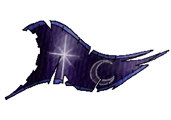
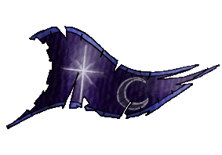

| Übersicht,
Anschläge und Stammtisch (RPG) |
|
Lang leben die Zwerge!
|
Turiandor Dragus
  |
Die Zwerge sind tot, lang leben die Zwerge!
*kratzt sich dann am Kopf*
Ach ne, das war der falsche Anschlag...
Fürst Turiandor Dragus,
Vorsteher von Quo Veheris,
Schwertmeister und Kriegsminister der Vertex
Zur 17. Stunde am 75.Dunkelfrost im Jahre 434 |
25.09.08 16:18
 |
|
Tar Aldarion
|
Meine wenigkeit wandert durch die Lande und hat keinen festen Wohnsitz.
Tar Aldarion,
Herr des Blutes
Zur 23. Stunde am 75.Dunkelfrost im Jahre 434 |
25.09.08 17:44
|
|
| Hator (RIP) |
mir ist auch jeder Ort ein Heim
Baron Hator,
Ehemann der reizenden Amyria,
Dichtezwerg der Propheten des Frostes
Zur 1. Stunde am 76.Dunkelfrost im Jahre 434 |
25.09.08 18:04
|
|
Alberix, Sohn des Duglim
 |
Nun denn - auch ich bin ein Zwerg von der Insel Kyll, ein Ort nicht nur bewohnt von wirren Elfen *mit einem Seitenblick auf Turiandor* sondern wie man hier sehen kann, durchaus von standhaftem Volk.
Pfalzgraf Alberix, Sohn des Duglim,
Vorsteher von Stullenberg
Zur 7. Stunde am 78.Dunkelfrost im Jahre 434 |
26.09.08 6:43
|
|
| Geist von Gabilkhazâd (RIP) |
meine Heimat ist das schöne Lummerland. Dort muss man sich nicht jeden Tag mit den Elfen rumschlagen und kann abends nach getaner Arbeit in Ruhe gutes Zwergenbier trinken.
Anschrift:
Imar-Biir-Allee 18
Gathol Melandoria
Da bin ich jedoch selten, da ich im Stollen, in der Schmiede oder auf dem Bauernhof meine Mitstreiter antrei ... ähm ... motiviere.
Kürzlich haben die doch wirklich mitten auf dem Bauernhof angefangen, einen Tunnel zu graben ...
Gabilkhazâd,
Feldscher der "Ar Khazâd"
Zur 2. Stunde am 79.Dunkelfrost im Jahre 434 |
26.09.08 11:11
|
|
| Agesha Goldsucher (RIP) |
-schmunzelt- vielleicht wollen sie unterirdische Felder anlegen. -zwinkert-
Ich wohne natürlich, wie sollte es auch anders sein, auf der schönsten Insel der Scherbe, auf Lummerland.
Zur Zeit leider noch in meinem Zimmer in der Taverne von Gathol Melandoria. Aber bald, sehr bald hoffentlich, wird meine Wohnhöhle in meiner Goldmine fertig gestellt sein. Denn so ein Zimmer.... nein das ist er etwas für Elfenvolk.
Agesha Goldsucher,
Daular Aurûm
Zur 4. Stunde am 79.Dunkelfrost im Jahre 434 |
26.09.08 11:42
|
|
Alberix, Sohn des Duglim
|
Hm, sag mal Gabilkhazâd, Du bist die erste Zwergin mit Hörnern die ich sehe. Ausserdem erscheinst Du mir recht gross. Kann es sein, dass Du ein Mensch bist, der sich nicht entscheiden konnte, ober er Mensch, Zwerg oder Minotauros sein will?
Pfalzgraf Alberix, Sohn des Duglim,
Vorsteher von Stullenberg
Zur 5. Stunde am 79.Dunkelfrost im Jahre 434 |
26.09.08 11:54
|
|
| Geist von Gabilkhazâd (RIP) |
*lächelt zu Albertix*
Nun, eine große Zwergin sicher, daher mein Name, ... als Talisman ein Haarreif mit Hörnern, die vielleicht von einem Säbelreh stammen. Ich wurde aber schon öfter darauf angesprochen, nur Minotauren sind mir nicht geheuer und die Verwechslung kann ich wirklich nicht nachvollziehen.
*schiebt sich den Haarreif zurecht*
Aber ein Mensch? Nein, was für eine abwegige Idee. Vor einiger Zeit wollten mir das schon mal ein paar Halbline in einem Tempel einreden. So ein Unsin ...
Im Übrigen sind sich auf der Nahmensweihfeier alle einig gewesen, dass so eine große Zwergin von einem mächtigen Clan abstammen muss. Ich bin schon gespannt, was ich noch über meine Vergangenheit herausfinden kann.
Gabilkhazâd,
Feldscher der "Ar Khazâd"
Zur 8. Stunde am 79.Dunkelfrost im Jahre 434 |
26.09.08 12:34
|
|
Alberix, Sohn des Duglim
|
*Hört sich die Erklärung von Gabilkhazâd an.*
Hm, nun, so Du das sagst, wird es wohl so sein. Wobei ich einem Zwergenvolk entspringe, in dem nicht dir Grösse sondern die Breite als Zeichen von Kraft und Macht gewertet wird.
Doch versteh mich nicht falsch, ich will hier nicht über Deinereiner werten.
Nur wenn man etwas nicht versteht, dann soll man fragen.
Und wahrlich möchte ich mich auch entschuldigen, Dich mit der hässlichen Gestalt eines Kuhkopfs verglichen zu haben.
Mir solls ja auch einerlei sein, was Du bist - doch trifft man so selten auf Zwerginnen, dass mich die Neugier stach.
Nichts für Ungut und Urvan schütze Dich!
Pfalzgraf Alberix, Sohn des Duglim,
Vorsteher von Stullenberg
Zur 13. Stunde am 79.Dunkelfrost im Jahre 434 |
26.09.08 13:41
|
|
| Agesha Goldsucher (RIP) |
Das ist wohl wahr, Zwerginnen scheinen rar zu sein hier auf den Inseln. Was sehr verwunderlich ist, oder trauen sie sich einfach nur nicht heraus aus den Bergen?
Agesha Goldsucher,
Daular Aurûm
Zur 15. Stunde am 79.Dunkelfrost im Jahre 434 |
26.09.08 14:13
|
|
Planet-Mors
 |
*grübelt* *noch immer schwankend*
Sagt,.. meine lieben Zwerge... ich habe von Ländern gehört, da schrumpfen sie Körperteile. Ist es auch möglich,.. ganze Menschen zu schrumpfen?
*zückt einen Gartenzwerg unter der Robe hervor*
Kennt ihr evtl. diesen hier? Ich hoffe,.. kein Bruder...
*sich die rote Nase vom Zwergenbier reibt*
Sir Planet-Mors,
Vorsteher von Skotos,
Hohepriester im Dienste des einzig wahren Glaubens an Pheron
Zur 1. Stunde am 80.Dunkelfrost im Jahre 434 |
26.09.08 16:37
|
|
| Sinanya de Soto (RIP) |
* grübelt auch *
Darf man überhaupt noch "Zwerge" sagen?
Heißt das nicht politisch korrekt jetzt "vertikal Herausgeforderte"?
* zuckt die Schultern *
Egal ... ich mag sie.
Baronesse Sinanya de Soto,
Vorsteherin von Sündenpfuhl,
Hüterin des heiligen Bartholin-Tabernakels
Zur 4. Stunde am 80.Dunkelfrost im Jahre 434 |
26.09.08 17:14
|
|
| Agrippa de Arsakes (RIP) |
*Einen leichten klapps Sin mal in den Nacken haut*
*grinsend davon geht*
Markgräfin Agrippa de Arsakes,
Vorsteherin von Meresin,
Kardinälin im Dienste des einzig wahren Glaubens an Pheron
Zur 8. Stunde am 80.Dunkelfrost im Jahre 434 |
26.09.08 18:13
|
|
Planet-Mors
|
Nun, man mag über die Zwerge sagen, was man will. Ihr Handwerkskünste sind unübetroffen, und wer - wenn nicht sie - versorgen uns mit Waffen bester Qualität,... ringen dem Land ihre Rohstoffe ab,...
Am Ende sind wir auf sie angewiesen,.. ebenso wie sie unsere Heilkünste und Zaubertränke benötigen.
Sir Planet-Mors,
Vorsteher von Skotos,
Hohepriester im Dienste des einzig wahren Glaubens an Pheron
Zur 12. Stunde am 80.Dunkelfrost im Jahre 434 |
26.09.08 19:08
|
|
| Virgonz Shock (RIP) |
*nochmal am spitzohrverseuchten Anschlag stehenbleibt*
Wars das?
Sind wir eine aussterbende Rasse?
*traurig,mit einem tiefen Seufzer von Dannen geht*
Virgonz Shock,
Hohepriester im Dienste des einzig wahren Glaubens an Urvan
Zur 13. Stunde am 80.Dunkelfrost im Jahre 434 |
26.09.08 19:24
|
|
| Don Gom (RIP) |
Wenn ein Zwerg noch eine Heimat sucht, ganz unten im Süden befindet sich Cape Diem. dort sind noch gute Gebirksketten die einen Meisterzwergen hervoragende Reichtümer bieten...
so denn...
(schon einmal Spitzhacken bestellt)
Baron Unschuld vom Lande,
Vorsteher von Vårberg,
Anführer der glorreichen Nation "Med Pansar",
Verlobter der reizenden Marianna lo Ilmarin,
General
Zur 23. Stunde am 80.Dunkelfrost im Jahre 434 |
26.09.08 21:32
|
|
Alberix, Sohn des Duglim
|
Nein, es gibt durchaus mehr Zwerg - doch Du weisst ja, wir sind nicht ein Volk von Schreiberlingen, daher werden wohl weniger sich hier melden.
Und Planet-Mors, bei gewissen Wesen kann man den Kopf schrumpfen in dem man ein kleines Loch in den Kopf macht und die Luft rauslässt.
Ich glaube der Erfinder von GARTENZWERGEN war ein solches Wesen - vermutlich ein Elf. *grummelt*
Und nein - dieser Rotzzipfelmützenträger ist bestimmt kein Bruder! *grummelt noch mehr*
Wartet nur, irgendwann stelle ich mal Stollenelfen her - kleine Tonelfen mit einem Docht im Kopf und genügend Hohlraum um Lampenöl reinzufüllen. *grinst nun wieder*
Pfalzgraf Alberix, Sohn des Duglim,
Vorsteher von Stullenberg
Zur 23. Stunde am 80.Dunkelfrost im Jahre 434 |
26.09.08 21:36
|
|
| Agesha Goldsucher (RIP) |
-kichert- Stollenelfen... das klingt nett. Leuchten im Dunkeln. Das hätte was. Doch ja das musst Du herstellen Alberix.
Agesha Goldsucher,
Daular Aurûm
Zur 6. Stunde am 81.Dunkelfrost im Jahre 434 |
26.09.08 23:13
|
|
Salkin McMulenberc
   |
Na, dann will ich mich mal auch dazugesellen bevor noch jemand auf die Idee kommt, man könne ein Zwergenfest abhalten ohne dass ich mitmache *grinst schelmisch*
Morkus Hammerhand mein Name, meine Schmiede findet sich am Fuße der erzreichen Berge von Kyll.
So, genug des Schönredens, wo und wann wird gefeiert? Das erste Faß Bier geht auf mich, ins zweite hüpf ich rein *grinst womoglich noch breiter*
Ach ja, und ich habe hier noch einen phantastischen Granitbrand, mal schauen wie weit wir damit kommen...
Sir Morkus Hammerhand,
Vorsteher von Hammerklamm
Zur 4. Stunde am 82.Dunkelfrost im Jahre 434 |
27.09.08 4:18
|
|
Planet-Mors
|
Nun, bei allen mehr oder weniger boshaft gemeinten Äußerungen ist mir die Vorstellung, als Stollenelf Model zu stehen, doch ein wenig unheimlich. Einst war ich dazu verdammt, selbst einen Stollen zu graben,.. und seither habe ich große Achtung vor jenen Zwergen, die dies so meisterhaft können.
Ausserdem würde mein fülliger Leib wohl jeden Stollen wie einen Korken verstopfen. Und je nachdem, welches Ende aus dem Stollen schaut, hätten die im Stollen Verbliebenen wenig zu lachen...
*reibt seinen mit Bohnen gefüllten Bauch* *grübelt, wie es sich äußern würde, wenn ein Zwerg einen mit ihm verstopften Stollen mit einer Fackel ausleuchtet und sieht gedanklich Wälder und Wiesen unter sich entlangfliegen*
Sir Planet-Mors,
Vorsteher von Skotos,
Hohepriester im Dienste des einzig wahren Glaubens an Pheron
Zur 24. Stunde am 85.Dunkelfrost im Jahre 434 |
28.09.08 1:49
|
|
| Agesha Goldsucher (RIP) |
-Planet Mors beschaut als er den Anschlag anheftet und schmunzelt-
Ein dicker Elf? Das hab ich ja noch nie gesehen. -schmunzelt- Nunja in einen dicken Elfen als Stollenelf würde natürlich viel mehr Petroleum aufnehmen und um so länger leuchten. -grinst-
Alles hat seine Vor- und Nachteile Spitzohr. -Eine für den Markt unüblicher Duft zieht an ihrer Nase vorbei, sie rümpft kurz die Nase- Heieiei aber ein wenig was Zwergisches steckt wohl auch in Dir, oder Spitzohr? -geht in die nächste Taverne um sich erst einmal ein Bier zu genehmigen-
Agesha Goldsucher,
Daular Aurûm
Zur 17. Stunde am 87.Dunkelfrost im Jahre 434 |
28.09.08 11:28
|
|
| Shayarîel Alcárin (RIP) |
*Eine Elfe steht wahrhaft staunend etwas abseits der Diskussion und flüstert irgendwann leise zu ihrer Begleitung.*
Und ich habe noch nie eine Zwergin so oft schmunzeln und grinsen sehen. Ich dachte immer, die können alle nur böse und garstig dreinschaun. Sachen gibts.. *die Elfe schüttelt dabei ungläubig den Kopf*
Shayarîel Alcárin
Zur 18. Stunde am 87.Dunkelfrost im Jahre 434 |
28.09.08 11:35
|
|
| Zoey von Torgarth (RIP) |
*schmunzelnd das Treiben beobachtet*
*Ihre Augen bleiben an folgendem Satz hängen*:
Sagt,.. meine lieben Zwerge... ich habe von Ländern gehört, da schrumpfen sie Körperteile. Ist es auch möglich,.. ganze Menschen zu schrumpfen?
*Sich den Namen von Planet-Mors notiert und schmunzeln weiter ihres Weges geht. Ansonsten, nette Idee von Thorgrim!*denkt*
Zoey Magatz,
Vorsteherin von Lohleben
Zur 1. Stunde am 2.Saatmond im Jahre 435 |
29.09.08 11:48
|
|
Planet-Mors
|
*kommt mit einem Korb voller Gartenzwerge wieder vorbei* *schaut Zoey Magatz an*
Du wolle Zwerg kaufe?
Sir Planet-Mors,
Vorsteher von Skotos,
Hohepriester im Dienste des einzig wahren Glaubens an Pheron
Zur 9. Stunde am 2.Saatmond im Jahre 435 |
29.09.08 13:33
|
|
| Zoey von Torgarth (RIP) |
*Schaut belustigt von Planet-Mors zu dessen Korb und wieder zurück. Nimmt einen Zwerg aus dem Korb und betrachtet diesen lange. Ihr Blick gleitet dabei immer wieder zu Planet-Mors.*
Dann könnte ich auch gleich Dich mitnehmen....*leise lachen muss und den Zwerg wieder zurück in den Korb legt*
Zoey Magatz,
Vorsteherin von Lohleben
Zur 9. Stunde am 2.Saatmond im Jahre 435 |
29.09.08 13:39
|
|
| Agesha Goldsucher (RIP) |
-grummelt Planet Mors an- Die verdienen die Bezeichnung Zwerg gar nicht. Oder hast Du schon einmal einen lebendigen Zwerg im Garten gesehen wie er Blumen giesst oder ähnliches Du Spitzohr?
Nein hast Du sicher nicht. -nimmt murrend so einen Gartenzwerg aus dem Korb und schaut ihn sich an- Und eine rote Mütze trägt ein Zwerg auch nicht.. Immer diese Verhunzung vom Zwergentum. -Planet Mors anmurrt- Was würdest Du wohl sagen wenn ich einen Baumelf erfinde der in eindeutigen Posen mit einem Baum gezeigt wird hä? Fändest Du das lustig? -Das Gartending wieder in den Korb legt-
Gartenzwerge.. PHA!!! -grummelnd von dannen geht-
Agesha Goldsucher,
Daular Aurûm
Zur 11. Stunde am 2.Saatmond im Jahre 435 |
29.09.08 13:58
|
|
Planet-Mors
|
*tststs*
*schaut zu Agesha Goldsucher*
Ihr missversteht das Anliegen der Nicht-Zwerge, wenn sie Gartenzwerge herstellen. Selbstverständlich habe ich noch keinen Zwerg im Garten gesehen. Für mich verkörpern Zwerge allerdings das, was sich viele Scherblinge wünschen: Zuverlässigkeit, Fleiß, Handwerkskunst, Kraft, Gesundheit, langes Leben, Zielstrebigkeit.... und - ganz besonders wir Elfen wünschen uns dies natürlich - Trinkfestigkeit.
Nur zu natürlich, dass man sich ein derart fleißiges Volk auch bei der Arbeit im Garten wünscht - wenn dies auch der Natur der Zwerge widerspricht und nicht heißen soll, dass ich im Volk der Zwerge lediglich Arbeiter sehe.
Und einen Elfen in eindeutiger Position mit einem Baum? Werte Agesha,.. ich wußte nicht, dass ihr dachtet, wir stellen Gartenzwerge auf, damit sie besprungen werden......
*den Korb schließt*
*sich einiger kaputter Gartenzwerge vor seinem Magierturm erinnert*
*beschließt, ein Wort mit Virgonz Shock zu sprechen*
Sir Planet-Mors,
Vorsteher von Skotos,
Hohepriester im Dienste des einzig wahren Glaubens an Pheron
Zur 12. Stunde am 3.Saatmond im Jahre 435 |
29.09.08 19:55
|
|
| Virgonz Shock (RIP) |
Nein,meine Damen und Herren,auch Gartenzwerge haben ihre Daseinsberechtigung.
Auch wenn sie von Spitzohren "erfunden" wurden(was ich für ein Gerücht halte)sind es trotzdem meine kleineren Brüder und meine Aufgabe sie zu beschützen!
Bei mir tollen sie in der Bäckerei,auf dem Bauernhof,ja sogar im Wald neben der Holzhütte herum und auch wenn ihre Lebensspanne ungemein kurz zu sein scheint*seufzt*...sie sterben frei und glücklich!
Darum sage ich Schluß mit dem Zwergenhandel und so Urvan will,werden meine Brüder mir bei der letzten Prüfung beistehen und die Wichtel werden folgendes berichten:
Gartenzwergarmee hilft Virgonz Shock zum ersten Mal Untotenfürst zu besiegen!!!
*überzeugt nickt und sich wieder dem Starkbier zuwendet um auf andere Gedanken zu kommen*
Virgonz Shock,
Hohepriester im Dienste des einzig wahren Glaubens an Urvan
Zur 3. Stunde am 6.Saatmond im Jahre 435 |
30.09.08 10:41
|
|
| Agesha Goldsucher (RIP) |
Tztztz Spitzohr was Du nur für Gedanken hast... also wenn echte Zwerge so etwas mit Gartenzwergen tun würden. -schüttelt den Kopf-
Du solltest mal bei einem Zwerg in Schule gehen damit Du etwas mehr über uns lernst. -nickt eine Taverne ansteuert die sie vor wenigen Momentan erst entdeckt hat-
Agesha Goldsucher,
Daular Aurûm
Zur 5. Stunde am 7.Saatmond im Jahre 435 |
30.09.08 16:37
|
|
| Thorgrim Trotzstirn (RIP) |
Es freut mich das es doch noch einige Zwerge in den Scherbenländern gibt, auch wenn es nicht viele sind die sich hier gemeldet haben so meine ich doch das es noch viele andere gibt, die aber das Anschlagsbrett nicht ereicht haben, vermutlich weil sie gerade einen Drachen jagen, sich mit einem Spitzohr streiten oder was auch immer...
Der große Schmied sei mit euch!
*läßt ein Fass herankarren*
Allen Zwergen hier gebe ich einen Krug meines selbstgebrauten dunklen Strakbieres aus...
*läßt für jeden Zwerg hier einen Krug des Bieres füllen*
Thorgrim Ungart,
Clanlord der Ungarts
Zur 21. Stunde am 14.Saatmond im Jahre 435 |
02.10.08 11:36
|
|
| Geist von Gabilkhazâd (RIP) |
Oh, Thor gibt eine Runde aus. Da werden bestimmt noch ein paar mehr Zwerge hier auftauchen ... vielleicht solltest Du noch ein paar Fässer holen.
*nimmt einen Krug und gleich einen kräftigen Schluck*
Man schmeckt die Zwergische Braukunst, ein gutes Bier.
Gabilkhazâd,
Feldscher der "Ar Khazâd"
Zur 24. Stunde am 14.Saatmond im Jahre 435 |
02.10.08 12:15
|
|
| Agesha Goldsucher (RIP) |
Hmm Thorgrims Spezialbier -nimmt einen Krug und trinkt einen grossen Schluck- Da hast Du ja ein ganz phantastisches Bier gebraut Thorgrim. -schleckt sich über die Lippen und wuschelt Thorgrim kurz durch den Bart-
Agesha Goldsucher,
Daular Aurûm
Zur 5. Stunde am 15.Saatmond im Jahre 435 |
02.10.08 13:33
|
|
Alberix, Sohn des Duglim
|
Hm Bier - hab Dank Thorgrim!
*Blickt dann entsetzt zu Agesha als sie Thorgrims Bart wuschelt. Mit weiterhin sehr misstrauischem Blick auf Agesha nimmt er offensichtlich Abstand von ihr und versucht dabei noch ein Bier zu erhaschen.*
Pfalzgraf Alberix, Sohn des Duglim,
Vorsteher von Stullenberg
Zur 20. Stunde am 16.Saatmond im Jahre 435 |
02.10.08 22:31
|
|
| Agesha Goldsucher (RIP) |
-zu Alberix schaut während sie ihren Krug leert- Na was denn? Hast Du etwa Angst vor mir? -schmunzelt und noch einen Schluck trinkt-
Agesha Goldsucher,
Daular Aurûm
Zur 4. Stunde am 17.Saatmond im Jahre 435 |
03.10.08 0:20
|
|
| Almera (RIP) |
Ich selbst bin zwar keine Zwergin aber 8 Zwerge der Familie Biernase folgen mir auf Schritt und Tritt. Wohnhaft sind wir in Cap Puccino.
Königin Almera,
Vorsteherin von Saion,
Anführerin der glorreichen Nation "Reich der Asgards",
erste Königin der Neuzeit
Zur 23. Stunde am 17.Saatmond im Jahre 435 |
03.10.08 4:51
|
|
Alberix, Sohn des Duglim
|
*Blickt noch immer zu Agesha und grummelt*
Sollte ich Angst haben? - Nein, ich will nur vermeiden das Du nicht noch auf die Idee kommst, Dich an MEINEM Bart zu vergreifen.
*Dann wendet er sich wieder seinem Bier zu, verdreht grummelnd die Augen und murmelt etwas von "Weiber" vor sich her.*
Pfalzgraf Alberix, Sohn des Duglim,
Vorsteher von Stullenberg
Zur 9. Stunde am 18.Saatmond im Jahre 435 |
03.10.08 7:06
|
|
| Agesha Goldsucher (RIP) |
Ach Du das passiert bestimmt nicht. Ich wuschel doch nicht jedem Zwerg den Bart. -Kopf schüttelt- Kerle...
Agesha Goldsucher,
Daular Aurûm
Zur 21. Stunde am 18.Saatmond im Jahre 435 |
03.10.08 10:02
|
|
Übersicht,
Anschläge und Stammtisch (RPG)
|